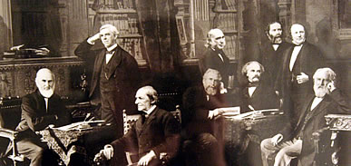

New England
Culture
Food
It is characterized by extensive use of seafood and dairy products, which results from its historical reliance on its seaports and fishing industry, as well as extensive dairy farming in inland regions. Many of New England's earliest Puritan settlers were from eastern England, where baking foods such as pies, beans, and turkey were more common than frying as was the tradition elsewhere. Two prominent characteristic foodstuffs native to New England are maple syrup and cranberries. The traditional standard starch is potato, though rice has a somewhat increased popularity in modern cooking. Although known for limited spices aside from ground black pepper, parsley and sage are common, with a few Caribbean additions like nutmeg. Due to the reliance on dairy, creams are standard. The favored cooking techniques are stewing, steaming, and baking.
Literature

New England also has strong literary roots, having been the birthplace of many famous authors such as Ralph Waldo Emerson, born in Boston. Henry David Thoreau was born in Concord, Massachusetts, where he lived, for some time, by Walden Pond, on Emerson's land. Nathaniel Hawthorne, romantic era writer, was born in historical Salem. Another famous author, Herman Melville, originally from New York, came to New England and moved into Pittsfield, Massachusetts to write his novel Moby Dick. A more modern author, Stephen King, was born in Portland, Maine and has used Maine as the setting in many of his stories.
Religion
Music
New England was for some time an important center of American classical music. The Second New England School was instrumental in reinvigorating
the tradition in the U.S. Prominent modernist composers also come from the region, including Charles Ives and John Adams. Boston is the site of
the New England Conservatory, the Yale School of Music and the Boston Symphony Orchestra.
In rock music, the region has produced bands as different as Aerosmith, Phish, the Pixies, and Boston. Dick Dale, a Quincy, Massachusetts native,
helped popularize surf rock. The region has also become a hotbed for Hardcore Punk and Heavy Metal music (especially with regards to Metalcore
and Deathcore).
Social Activities

In much of rural New England, particularly Maine, Acadian and Québécois culture are included in music and dance. Contra dancing and country square dancing are popular throughout New England, usually backed by live Irish, Acadian, or other folk music.
Opera houses and theaters, like the Vergennes Opera House in Vergennes, Vermont, are popular in New England towns.
Traditional knitting, quilting and rug hooking circles in rural New England have become less common; church, sports, and town government are
more typical social activities. These traditional gatherings are often hosted in individual homes or civic centers; larger groups regularly
assemble at special-purpose ice cream parlors that dot the countryside. New England leads the U.S. in ice cream consumption per capita.
In the U.S., candlepin bowling is essentially confined to New England, where it was invented in the 19th century.
Art
New England is also justly famous for the art it has produced, particularly the seascapes painted on Cape Cod, along the coast of Maine, as well as those by Hudson River School artists such as Thomas Cole and his student Frederic Church. Some of the other artists who have memorably painted New England landscapes and seascapes include Winslow Homer (1836-1910), John Marin (1870-1953), Fairfield Porter (1907-1975), Neil Welliver (1929-2005), and Andrew Wyeth (b. 1917), the latter of the iconic Christina's World, painted in a coastal Maine field.
Demographics
{kind=link}
According to the 2006 – 08 American Community Survey, New England had a population of 14,265,187, of which 48.7% were male and 51.3% were female.
Approximately 22.4% of the population were under 18 years of age; 13.5% were over 65 years of age.
In terms of race and ethnicity, White Americans made up 83.4% of New England's population, of which 77.7% were whites of non-Hispanic origin.
Black Americans composed 7.3% of the region's population, of which 6.9% were blacks of non-Hispanic origin. Native Americans made up 0.3% of
the population, numbering 37,234. There were just over 500,000 Asian Americans residing in New England at the time of the survey, making up
3.5% of the region's population. There were 158,282 Chinese Americans, constituting 1.1% of the region's total population, and 119,140 Indian
Americans (0.8%). Japanese Americans numbered 14,501 (0.1%).